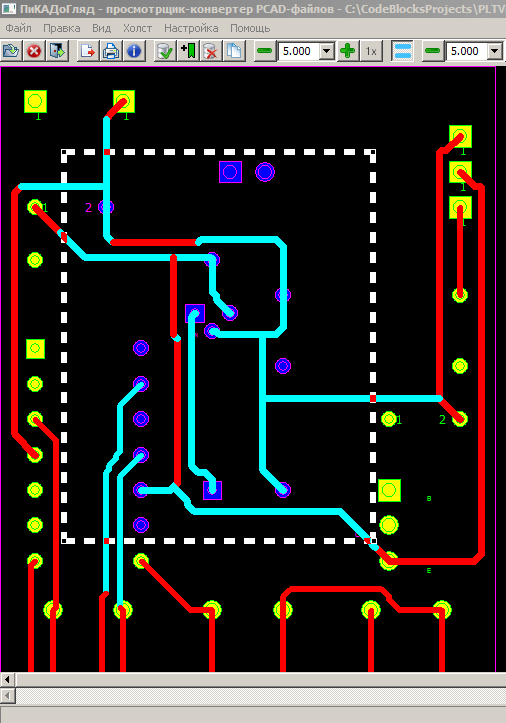

Выделяющая рамка - один из предоставляемых программой селектирующих инструментов. Как и прочие подобные инструменты, он позволяет выделить некоторую компактно расположенную совокупность примитивов загруженного изображения для последующего выполнения над ними определённых операций. Другими подобными средствами являются отметка и холст. Выглядит выделяющая рамка так:
Рамка представляет собой прямоугольник, очерченный пунктирной линией. В его углах располагаются специальные манипуляторы - ручки. Все примитивы изображения, описанный прямоугольник которых имеет непустое пересечение с прямоугольником рамки, считаются выделенными ей.
Для использования рамки выделения её прежде всего предстоит создать. Созданная первоначально рамка не является обязательно окончательной и неизменной, программа предоставляет несколько способов, с помощью которых существующую рамку можно изменить - отредактировать. Отметим тут, что все операции с рамкой (построение, корректировка, удаление) должны выполняться при предварительно нажатой и удерживаемой в нажатом положении клавише Alt.
Первоначально рамка образуется при движении мыши по области обзора с зажатой левой кнопкой, если перед нажатием левой кнопки мыши была нажата и удерживается клавиша Alt. Место нажатия левой кнопки мыши определяет положение одной из вершин выделяющего прямоугольника, а место её отпускания - второй его вершины, располагающейся по диагонали от первой.
После отпускания кнопки мыши в области просмотра будет отображаться рамка в её текущем состояние. Она всегда представляет собой прямоугольник, в вершинах которого дополнительно рисуются особые элементы - ручки. В дальнейшем, поместив курсор мыши на любую из сторон рамки или на ручки вершин, а затем нажав левую кнопку мыши (клавиша Alt клавиатуры по-прежнему должна быть предварительно нажата и удерживаться), можно перемещать отмеченный данным способом элемент рамки в любую другую целевую точку. Таким образом, текущая форма рамки может изменяться - редактироваться.
Наконец, вовсе удалить рамку можно коротким щелчком по левой кнопке мыши, не допуская при этом её перемещения.
Построенную таким методом и, при необходимости, откорректированную рамку можно использовать как выделитель подмножества объектов при совершении над ними какой-либо операции. Набор возможных операций - отметка/снятие отметки, распечатка, копирование в буфер обмена, экспорт. При совершении каждой такой операции, если при этом включён режим использования рамки, а сама она существует, то операция будет выполнена только над теми примитивами, чьи описанные прямоугольники пересекаются с выделяющей рамкой.
Ниже приведён пример применения рамки выделения для установки признака отметки на ряд элементов изображения, расположенных (хотя бы частично) внутри рамки.
